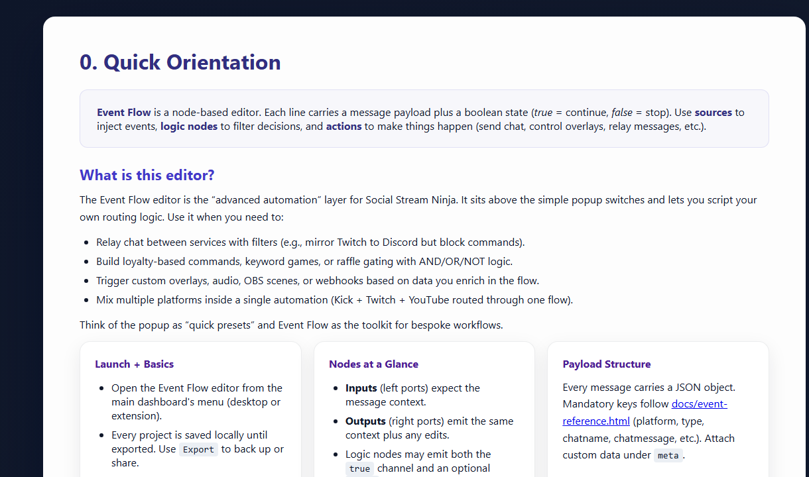
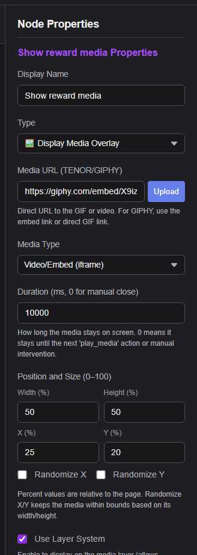

Event Flow ใช้ทำอะไร
เรียกขั้นตอนงานกำหนดเองจากปุ่ม Stream Deck หรือการเรียก API แบบ HTTP/WebSocket/P2P.
Event Flow เป็นตัวแก้ไขระบบอัตโนมัติขั้นสูง ใช้เมื่อสวิตช์ในป๊อปอัปไม่เพียงพอ เช่น กรองแชต เรียกสื่อ ส่งต่อข้อความ เรียก webhook หรือควบคุม OBS

ก่อนเริ่มทุกตัวอย่าง
- ใช้หนึ่งแพลตฟอร์มทดสอบและหนึ่งเซสชัน Social Stream
- เปิดแผงด็อกและยืนยันว่ามีแชตเข้ามา
- เปิด
actions.html?session=YOUR_SESSIONหากตัวอย่างเล่นเสียง สื่อ หรือควบคุม OBS - ทดสอบด้วยข้อความจำลองหรือตัวเรียกที่ปลอดภัยก่อนถ่ายทอดสด
- ส่งออกโฟลว์ที่ทำงานได้ก่อนแก้ไขครั้งใหญ่
ไอเดียตัวอย่าง
| ตัวอย่าง | ตัวเรียกใช้งาน | การดำเนินการ |
|---|---|---|
| เสียงจากคำสำคัญ | ข้อความมี !hype | เล่นคลิปเสียงใน actions.html. |
| สื่อรางวัล Kick | อีเวนต์รางวัล/แต้มช่อง | แสดงภาพ วิดีโอ หรือเสียง |
| ผู้แชตครั้งแรก | แฟล็กหรือตัวกรองผู้แชตครั้งแรก | นำข้อความมาแสดงเด่นหรือแสดงโอเวอร์เลย์ต้อนรับ |
| การแจ้งเตือนบริจาค | hasDonation หรืออีเวนต์บริจาค | ส่งไปโอเวอร์เลย์แจ้งเตือน webhook หรือการกระทำฉาก OBS |
| ส่งต่อ Webhook | ตัวกรองแพลตฟอร์ม/ประเภท | ส่งข้อมูลที่เลือกไปยังบริการของคุณด้วย POST |
| สุ่มเลือกเสียง | คำสำคัญ + เกต RANDOM | สุ่มเล่นหนึ่งในสองคลิป — ดู micro-flow D ในคู่มือตัวแก้ไข. |
ตัวอย่างสื่อรางวัล Kick
นี่คือรูปแบบ Event Flow ที่ใช้จริงบ่อยที่สุด: จับคู่รางวัล แล้วเล่นสื่อผ่าน Flow Actions


รายละเอียดเชิงลึก: คู่มือเสียง/สื่อรางวัล Kick.
วิธีแก้ปัญหาที่พบบ่อย
- ไม่มีอะไรเกิดขึ้น: ยืนยันก่อนว่าอีเวนต์ต้นทางถึงแผงด็อก
- เสียงหรือสื่อไม่เล่น: เปิด
actions.htmlด้วยเซสชันเดียวกันไว้ แล้วตรวจ คู่มือโฮสต์สื่อ Event Flow. - การกระทำ OBS ล้มเหลว: ตรวจ OBS WebSocket v5 พอร์ต
4455, รหัสผ่าน และสิทธิ์ - โฟลว์ทำงานบ่อยเกินไป: เพิ่มตัวกรองแพลตฟอร์ม อีเวนต์ คำสำคัญ หรือผู้ใช้ที่เข้มงวดขึ้น
เอกสารอ้างอิงฉบับเต็ม: คู่มือตัวแก้ไข Event Flow.